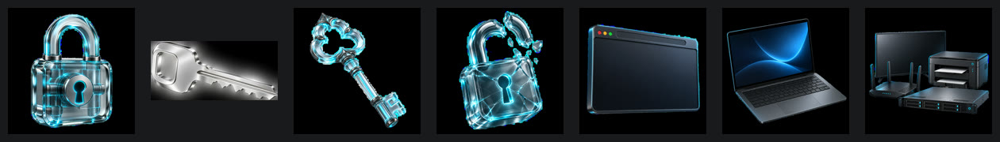

你给一段口播音频、一份文案和几张素材，我按自己做号用的同一套流程，做出一条带字幕、配乐的 4K 讲解视频。下面是一次完整的演示。
先出一版合格的初稿，再按我做号的标准一镜一镜打磨，最后出 4K。时间主要花在打磨上。
音频、文案、品牌色、要强调的词、图片或视频
转写对时间、切分镜、配乐、渲染、自检，一条命令跑完
逐镜调整镜头和大字，重点镜头单独精修
成片、封面、字幕文件、交付单
一个虚构的「示例安全课堂」，要给员工做一条一分钟以内的密码安全科普。

「给员工看的安全小科普，一分钟以内，语气轻松，不要吓人。」
| 字幕 | 以文案为准，按录音逐字对时间 | ✓ |
| 响度 | -16.1 LUFS（平台常用 -16） | ✓ |
| 峰值 | -1 dBFS，不爆音 | ✓ |
| 配乐 | 成片重新转写，和文案相似度 0.96，配乐没有盖住人声 | ✓ |
| 节奏 | 平均 3.9 秒换一个画面，最长 6.3 秒 | ✓ |
| 规格 | 2160×3840 竖版 4K | ✓ |
同一套流程走完整版的样子：先写稿、配音，再照参考片的节奏和构图复刻画面，配乐按段落自己合成。上面那条初稿，打磨的目标就是这个水平。
| 选题 | AI 聊久了为什么会忘事（上下文窗口） |
| 配音 | 每句生成 3 个候选，用语音识别回听，挑错字最少的那条 |
| 画面 | 全部用代码生成：聊天气泡、记事本、窗口列表，每个元素什么时候进、怎么动都写在规格里 |
| 参考 | 第 1 镜、第 3–5 镜照参考片的进场顺序和构图做，颜色换成自己的 |
| 配乐 | 自己合成：开头一层铺底，讲原理时加鼓点，结尾全进。不涉及版权 |
| 换底 | 深色和浅色画面交替，不让观众看同一面墙 |